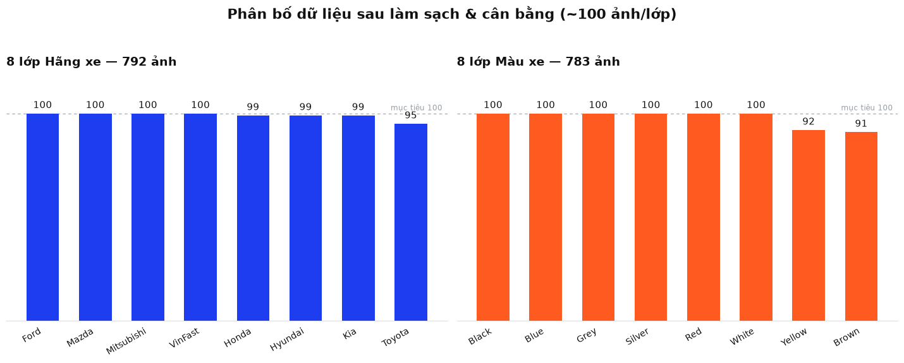

Data Engineering, EDA & Processing Pipelines
Giảng viên hướng dẫn
Thầy Lương Trung KiênThành phần dữ liệu
Plates, Brand, ColorSinh viên thực hiện
Konalyn (Lead Architect)Để huấn luyện các mô hình trong pipeline, nhóm đã thu thập dữ liệu từ các nguồn mở uy tín kết hợp công cụ cào dữ liệu ảnh thực tế tại các bãi đỗ xe Việt Nam.
| Thành phần | Số lượng mẫu | Nguồn gốc chính |
|---|---|---|
| Biển số xe (Plate BBoxes) | 3,500 ảnh | VinBigData & Kaggle Vietnam Plate Dataset |
| Hãng xe (Car Brands) | 8,000 ảnh | Scraped Google Images & Web Car Catalogues |
| Màu xe (Colors) | 6,500 ảnh | Kaggle Vehicle Color & Stanford Cars Dataset |

Tỷ lệ và kích thước hộp bao (Bounding Box) của biển số xe quyết định chất lượng định vị của YOLOv8 và ảnh hưởng trực tiếp đến độ chính xác của EasyOCR.
Số lượng ảnh thực tế được làm sạch và chuẩn bị cho huấn luyện phân lớp:
| Thương hiệu xe | Số lượng ảnh | Tỷ lệ % |
|---|---|---|
| Toyota, Hyundai, Ford | 568 ảnh | 47.0% |
| Honda, Kia, Mazda | 401 ảnh | 33.2% |
| VinFast, Mitsubishi | 240 ảnh | 19.8% |
Thống kê phân bố 8 gam màu cơ bản trong tập dữ liệu thực nghiệm:
| Nhóm màu sắc | Số lượng ảnh | Tỷ lệ % |
|---|---|---|
| Trắng, Đen, Xám, Bạc, Xanh dương | 960 ảnh | 85.0% |
| Đỏ (Red) | 110 ảnh | 9.7% |
| Nâu, Vàng (Brown, Yellow) | 60 ảnh | 5.3% |
Các camera bãi xe thiếu sáng dễ gây mất chi tiết vùng tối.
Khắc phục: Áp dụng kỹ thuật Gamma Correction tự động điều chỉnh độ sáng vùng tối mà không làm cháy các vùng sáng.
Xe máy đi nghiêng làm méo hình học biển số khiến OCR nhận diện sai ký tự.
Khắc phục: Sử dụng mở rộng 5% margin khi cắt vùng biển và sắp xếp dòng bằng thuật toán tọa độ tương đối.
Xe di chuyển nhanh qua barrier gây mờ nhòe (Motion Blur).
Khắc phục: Thêm các mẫu ảnh mờ nhân tạo (Gaussian Blur) vào tập huấn luyện giúp mô hình tăng tính tổng quát.
Tất cả ảnh thô đầu vào đều được chạy qua bộ tiền xử lý đồng nhất trước khi nạp vào mạng học sâu nhằm đảm bảo tốc độ huấn luyện tối đa.
Tăng cường dữ liệu là bắt buộc khi số lượng ảnh thực tế bị giới hạn. Chúng em thiết kế các bộ augmentation khác nhau cho từng mô-đun:
"Tăng cường dữ liệu giúp tăng thêm 4.5% độ chính xác cho bộ phân loại hãng xe khi kiểm nghiệm trên tập dữ liệu thực tế ngoài bãi đỗ."
Vùng ảnh biển số được crop phóng to và tiền xử lý nhị phân hóa tăng độ nét.
Ảnh xe hơi được căn giữa, resize về 224x224, nén giảm dải màu phục vụ EfficientNet.
Phần thân xe được cắt và tăng cường độ bão hòa màu để MobileNet nhận diện gam màu chuẩn xác.
Để đảm bảo các mô hình không bị lệch pha do lỗi dữ liệu nhãn (Labeling Noise), chúng em thiết lập quy trình kiểm tra tự động trước khi huấn luyện:
| Bước kiểm nghiệm | Hành vi | Trạng thái |
|---|---|---|
| Unit Test - Dataset Load | Tải tập dữ liệu huấn luyện thử nghiệm | PASSED |
| Unit Test - BBox Format | Xác thực tọa độ chuẩn hóa YOLO | PASSED |
| Unit Test - Normalization | Kiểm tra pixel dải [-1.0, 1.0] | PASSED |
Khi chạy thử trên ảnh thật, dữ liệu & cách đánh giá ban đầu bộc lộ điểm yếu, nên đã điều chỉnh:
| Hạng mục | Ban đầu | Cập nhật & Lý do |
|---|---|---|
| Dataset biển số | Chưa có model biển riêng | Tải & train trên ~6.000 ảnh biển VN (gồm xe máy 2 dòng) → mAP50 0.99. |
| Ảnh kiểm thử E2E | Ảnh "mock" tự vẽ (nền đỏ + chữ giả) | Thay bằng ảnh CCTV xe VN thật có nhãn — để đo đúng năng lực. |
| Tập màu | Ảnh xe sạch (khác miền CCTV) | Bổ sung augmentation mô phỏng CCTV (mờ/đèn hầm) cho sát thực tế. |
| Bộ đo (benchmark) | Chưa có số liệu so sánh | 3 benchmark thật: phát hiện biển · OCR · CNN màu (docs/benchmarks/). |
Nguyên tắc: đánh giá trên dữ liệu thật, không dùng ảnh tự tạo để "tự khen".
Cảm ơn thầy và các bạn đã lắng nghe phần báo cáo dữ liệu!
Smart Parking Security via Cross-Verification
Môn học: DPL302m - Deep Learning (Học Sâu) | FPT University